Continuous Probability Distributions
NORM.DIST, NORM.INVVungle serves 15-second video ads inside other apps and earns revenue mainly when viewers install the advertised app.
The metric that pays the bills is eRPM: effective revenue per 1,000 impressions. Algorithm B is the new ad-serving engine the team is evaluating.
So far we have summarized eRPM (center, spread) and modeled counts (installs) with the Binomial and Poisson. Today we model a continuous quantity — the dollar value of eRPM itself.
Over 30 days of June 2014, B’s daily eRPM averaged $3.46 with a standard deviation of $0.34. The histogram is a bell.
Today’s move: treat daily eRPM as a draw from a Normal distribution — then we can answer forward-looking questions about days we have not yet seen.
“Model B’s daily eRPM as Normal($3.46, $0.34). What’s the chance tomorrow’s eRPM tops $3.50? What eRPM marks a 90th-percentile day — and is the Normal model even trustworthy here?”
Counting distributions (Binomial, Poisson) answered “how many installs?” Today’s tool answers “how much revenue per impression, and how often above a threshold?”
How today’s studio runs: I demo each idea on a textbook example → your team fits the Normal to Vungle eRPM (two sprints) → we debrief what the model can and cannot tell a manager.
By the end, your team turns a fitted distribution into a planning number (a probability and a percentile) and stress-tests the assumption behind it.
Every tool today maps onto the Vungle eRPM data:
| The managerial question | The tool |
|---|---|
| “What does a typical day look like?” | Normal model — mean $3.46, sd $0.34 |
| “How likely is eRPM above $3.50?” | z-score + NORM.DIST (a tail area) |
| “What’s a great day — the top 10%?” | NORM.INV (a percentile) |
| “Is ‘Normal’ even a fair assumption?” | Normal-probability (QQ) plot |
| “Plan for installs at huge scale” | Normal approximation of the Binomial |
“Before we can ask ‘how likely is eRPM above $3.50?’, we need a model for a continuous quantity. Today: what a continuous distribution is, and the two we use most — the uniform and the Normal.”
The payoff question \(P(\text{eRPM} > \$3.50)\) waits for Lecture 2. First we build the machinery: probability as area, the Normal shape, and the z-score that handles any Normal.
Anchor examples today: Slater’s Buffet (uniform) and Pep Zone inventory (Normal). Then we fit the Normal to Vungle eRPM.
A continuous random variable can assume any value in an interval on the real line (eRPM could be $3.4590, $3.45901, …).
Unlike a die roll, you cannot ask for the probability of one exact value:
\[ P(X = x) = 0 \quad \text{for any single point } x \]
Instead we ask about an interval: \(P(x_1 \le X \le x_2)\). The eRPM is never exactly $3.50 — but it can be between $3.40 and $3.60.
For a continuous variable, probability is the area under a curve called the probability density function \(f(x)\).
Think of \(f(x)\) as a smoothed histogram: the relative-frequency bars, refined until they form a continuous curve.
Two defining properties:
\[ f(x) \ge 0 \quad \text{for all } x \qquad\qquad \int_{-\infty}^{\infty} f(x)\, dx = 1 \;\; (\text{total area} = 1) \]
Key subtlety: \(f(x)\) is a density, not a probability — it can exceed 1. Only areas are probabilities.
The probability \(X\) lands between \(x_1\) and \(x_2\) is the area under \(f(x)\) across that interval:
\[ P(x_1 \le X \le x_2) = \text{area under } f(x) \text{ from } x_1 \text{ to } x_2 \]
\[ f(x) = \begin{cases} \dfrac{1}{b - a} & a \le x \le b \\[4pt] 0 & \text{otherwise} \end{cases} \]
The density is a flat rectangle of height \(1/(b-a)\) — and the rectangle’s total area is exactly 1.
Mean and variance:
\[ E(X) = \frac{a + b}{2} \qquad\qquad \operatorname{Var}(X) = \frac{(b - a)^2}{12} \]
Slater’s charges customers by the weight of salad they take. Sampling shows the amount is uniform between 5 and 15 ounces: \(X \sim \text{Uniform}(5, 15)\), so \(f(x) = 1/10\).
Expected value and variance:
\[ E(X) = \frac{5 + 15}{2} = 10 \text{ oz} \qquad \operatorname{Var}(X) = \frac{(15 - 5)^2}{12} = 8.33 \]
\[ P(12 \le X \le 15) = (15 - 12) \times \frac{1}{10} = 0.30 \]
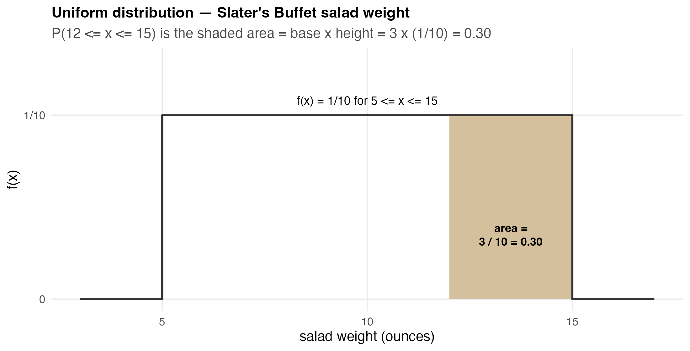
The Normal is the most important distribution for a continuous variable — it describes heights, test scores, measurement errors, rainfall, and daily revenue metrics like eRPM.
It is the backbone of statistical inference (the next several topics), and it approximates the Binomial and Poisson at large \(n\).
Its density:
\[ f(x) = \frac{1}{\sigma\sqrt{2\pi}}\; e^{-\frac{1}{2}\left(\frac{x - \mu}{\sigma}\right)^2}, \qquad \pi \approx 3.14159, \;\; e \approx 2.71828 \]
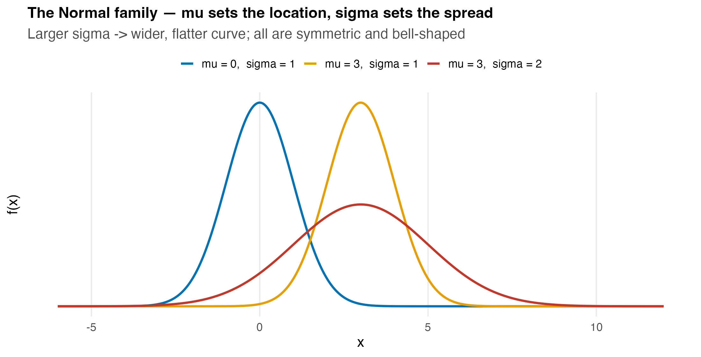
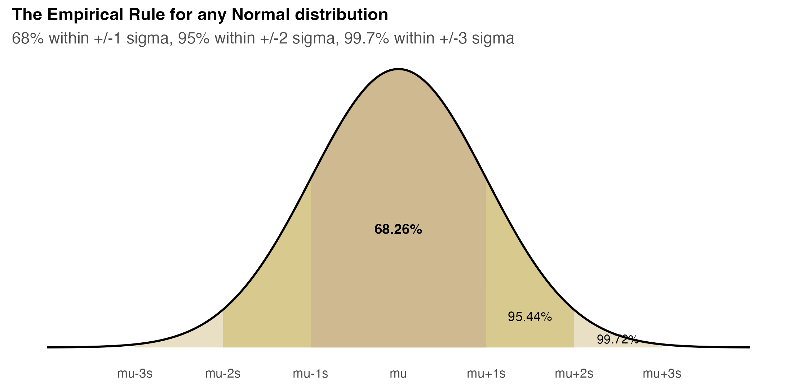
There are infinitely many Normal curves (one per \(\mu, \sigma\)). We standardize them all to a single reference: the standard Normal, \(Z \sim N(0, 1)\) — mean 0, standard deviation 1.
Standardization converts any \(x\) to a \(z\):
\[ z = \frac{x - \mu}{\sigma} \]
\(z\) is the number of standard deviations \(x\) lies from the mean. \(z = +1.5\) means “1.5 SDs above average”; \(z = -2\) means “2 SDs below.”
Once standardized, one table (or one Excel function) gives the area for any Normal problem.
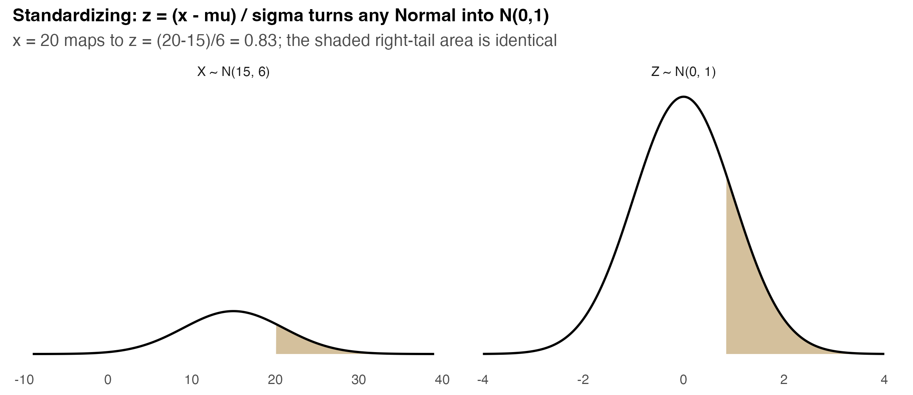
Pep Zone reorders motor oil when stock hits 20 gallons. Demand during the replenishment lead time is Normal with mean 15, sd 6: \(X \sim N(15, 6)\).
What is the probability of a stockout — that demand exceeds 20 before the new stock arrives?
\[ z = \frac{20 - 15}{6} = 0.83 \quad\Rightarrow\quad P(X > 20) = P(Z > 0.83) = 0.2023 \]
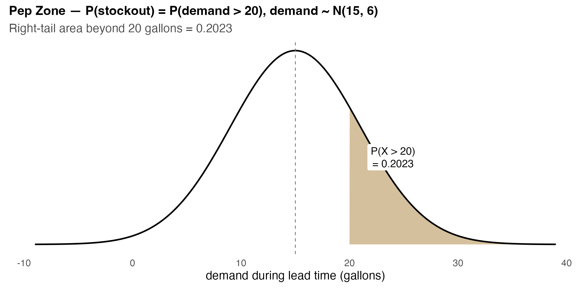
data/vungle_daily.csv, algorithm == "B"):| Quantity | Value |
|---|---|
| \(n\) (days) | 30 |
| \(\bar{x}\) (mean eRPM) | $3.459 |
| \(s\) (standard deviation) | $0.344 |
So our working model is \(\text{eRPM}_B \sim N(\mu = 3.459, \; \sigma = 0.344)\).
A first z-score. A $3.50 day standardizes to:
\[ z = \frac{3.50 - 3.459}{0.344} = 0.12 \]
The ToolPak is not needed for Normal probabilities — two worksheet functions do everything:
=NORM.DIST(x, mean, sd, TRUE) → the cumulative probability \(P(X \le x)\).=NORM.INV(p, mean, sd) → the inverse: the \(x\) with \(P(X \le x) = p\) (a percentile).The standardized cousins act on \(z\) directly:
=NORM.S.DIST(z, TRUE) → \(P(Z \le z)\); =NORM.S.INV(p) → the \(z\) for probability \(p\).Workhorses: NORM.DIST and NORM.INV (real units). The .S. versions are for when you have already standardized to a \(z\).
We put them to work in Lecture 2 — for now, your team just fits the model and reads its shape.
Decide: is the Normal a sensible model for B’s daily eRPM — and what does a “typical” day look like?
Data: data/vungle_daily.csv (filter algorithm = "B") · Time: ~8 min
AVERAGE and \(s\) = STDEV.S of the 30 B-day erpm values (target: ~3.459, ~0.344).Submit before you leave (graded, one slide per group): your call on whether Normal is a sensible model for B’s eRPM + the key numbers (\(\bar{x}\), \(s\), the 95% empirical interval, the \(z\) for $3.50) + the two things you would challenge in the fit.
One sentence: B’s daily eRPM is well described by a Normal centered at $3.46 with spread $0.34 — and standardizing (\(z = (x-\mu)/\sigma\)) turns any eRPM question into a single standard-Normal area.
One number: \(z = 0.12\) for a $3.50 day — barely above average, so “beating $3.50” is roughly a coin flip (we’ll nail the exact probability next time).
One caveat: the empirical rule and z-scores are only as good as the Normal assumption. We have assumed the bell; Lecture 2 we check it with a QQ plot before betting a decision on it.
Homework (individual): today’s tools (the Normal model, z-scores, and percentiles) are drilled on HW2 — individual problem sets in the previous-edition format, posted on Brightspace. Run them yourself so you can check an analyst who uses them.
Next time: we cash in the model — exact tail probabilities (\(P(\text{eRPM} > \$3.50)\)), the 90th-percentile day, a formal normality check, and the Normal approximation of the Binomial.
“Cash in the model. Tomorrow’s eRPM is \(\sim N(3.459, 0.344)\). What’s \(P(\text{eRPM} > \$3.50)\)? What eRPM defines a top-10% day? And before we trust any of it, is the Normal assumption fair?”
Lecture 1 built the model; today we use it: a tail probability, a percentile, an assumption check, and the bridge from counts (Binomial) to the Normal at scale.
Tools: NORM.DIST (tail areas), NORM.INV (percentiles), the QQ plot (assumption), and the Normal approximation of the Binomial (planning installs).
\[ z = \frac{3.50 - 3.459}{0.344} = 0.12 \qquad P(\text{eRPM} > 3.50) = P(Z > 0.12) = 1 - 0.547 = 0.453 \]
\[ \texttt{=1 - NORM.DIST(3.50, 3.459, 0.344, TRUE)} \;=\; 0.4526 \]
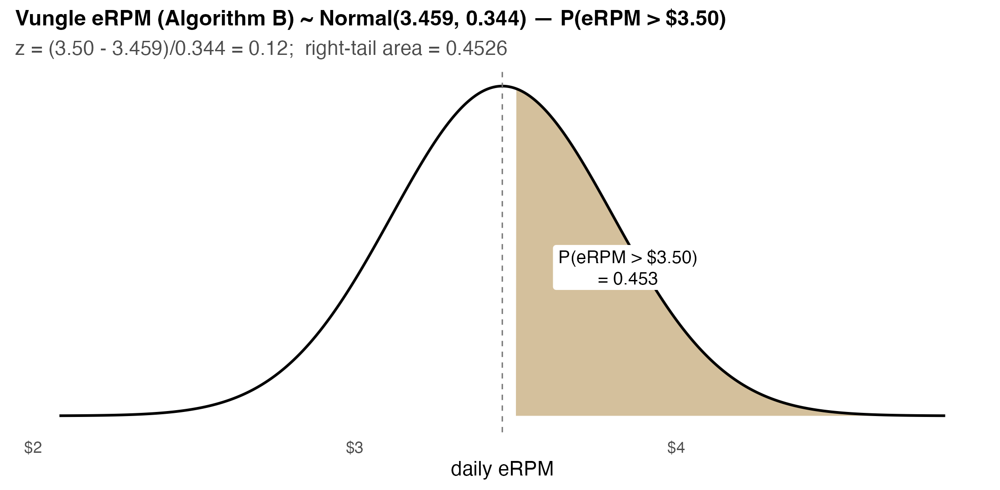
NORM.DIST(3.00, 3.459, 0.344, TRUE) \(= 0.091\) — about a 1-in-11 chance B dips below $3.00.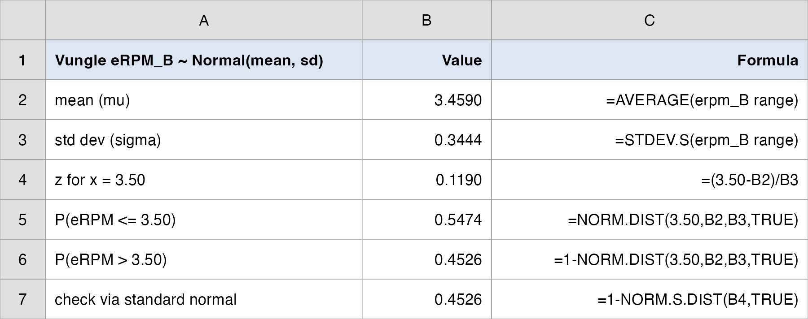
NORM.DIST(..., TRUE) returns the area to the left; subtract from 1 for a right tail.1 - NORM.S.DIST(0.12, TRUE)) gives the same 0.4526. Two roads, one answer.Flip the question. Instead of “what area is above $3.50?”, ask “what eRPM marks the top 10% of days?” — the 90th percentile.
Inverse Normal: find \(x\) with \(P(X \le x) = 0.90\). By hand, \(z_{0.90} = 1.282\), then back-convert:
\[ x = \mu + z\,\sigma = 3.459 + 1.282 \times 0.344 = \$3.90 \]
\[ \texttt{=NORM.INV(0.90, 3.459, 0.344)} \;=\; \$3.90 \]
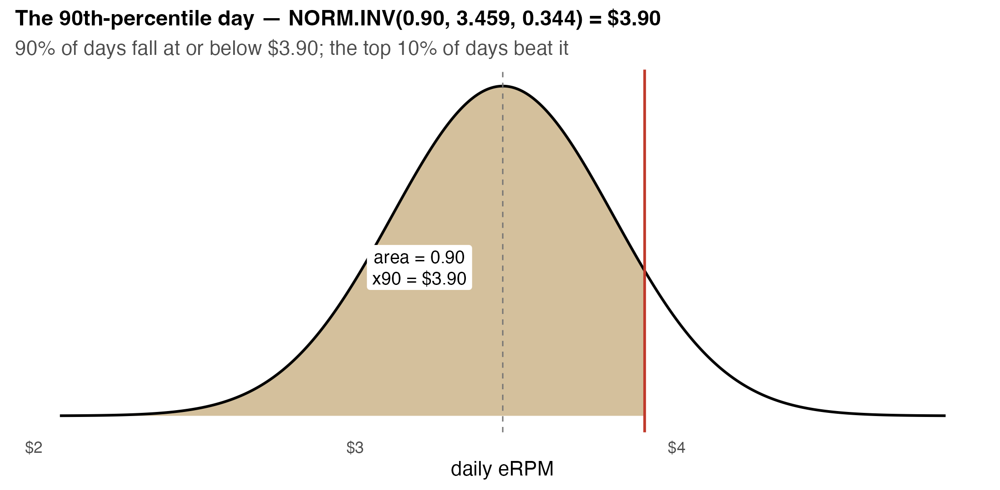
NORM.DIST and NORM.INV are inverses: NORM.DIST(3.90, …) \(\approx 0.90\), and NORM.INV(0.90, …) \(\approx 3.90\). One asks “what area?”, the other “what value?”.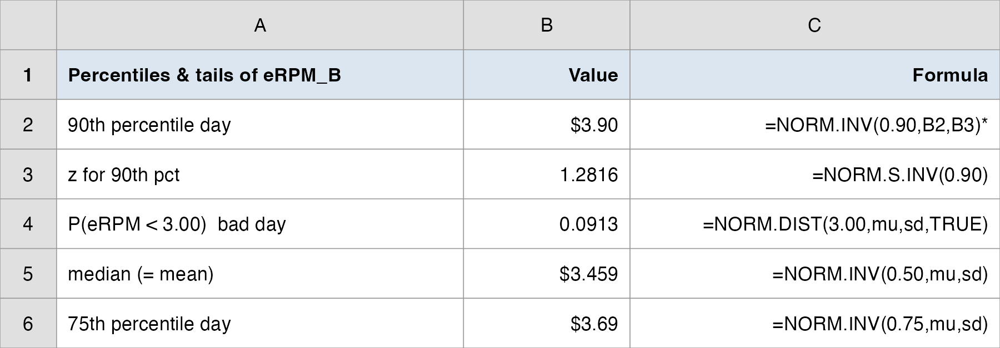
NORM.INV(0.50, …) confirms it.Every probability and percentile we just computed assumes eRPM is Normal. If the assumption fails, the numbers are fiction. So we check.
A Normal-probability plot (QQ plot) sorts the data and plots each value against the value a perfect Normal would predict at that rank.
The read:
A formal companion is the Shapiro-Wilk test (\(H_0\): the data are Normal). A large p-value means “no evidence against Normal” — exactly what we want here.
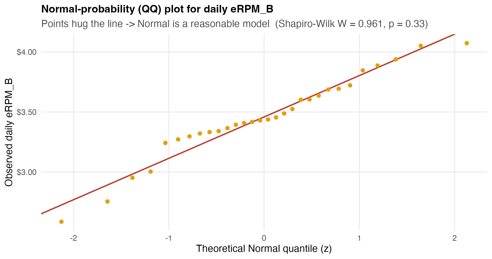
Decide: how often does B top $3.50, what’s a top-10% day, and is the Normal model trustworthy?
Data: data/vungle_daily.csv (filter algorithm = "B") · Time: ~12 min
=1 - NORM.DIST(3.50, mean, sd, TRUE). State \(P(\text{eRPM} > \$3.50)\) in plain English.=NORM.INV(0.90, mean, sd). Report the 90th-percentile day as a “great day” benchmark.Submit before you leave (graded, one slide per group): your verdict on whether to trust the Normal model + the key numbers (\(P(\text{eRPM} > \$3.50)\), the 90th-percentile eRPM, the QQ-plot read) + the two things you would challenge in the analysis.
Recall installs are counts: each impression either installs (success) or not — a Binomial with huge \(n\). On a typical B-traffic day, \(n \approx 527{,}000\) impressions, \(p \approx 0.0035\).
The exact Binomial is unwieldy at that scale — but a smooth Normal matches it beautifully.
Conditions to approximate \(\text{Binomial}(n, p)\) with a Normal:
\[ n > 20, \qquad np \ge 5, \qquad n(1 - p) \ge 5 \]
\[ \mu = np \qquad\qquad \sigma = \sqrt{np(1 - p)} \]
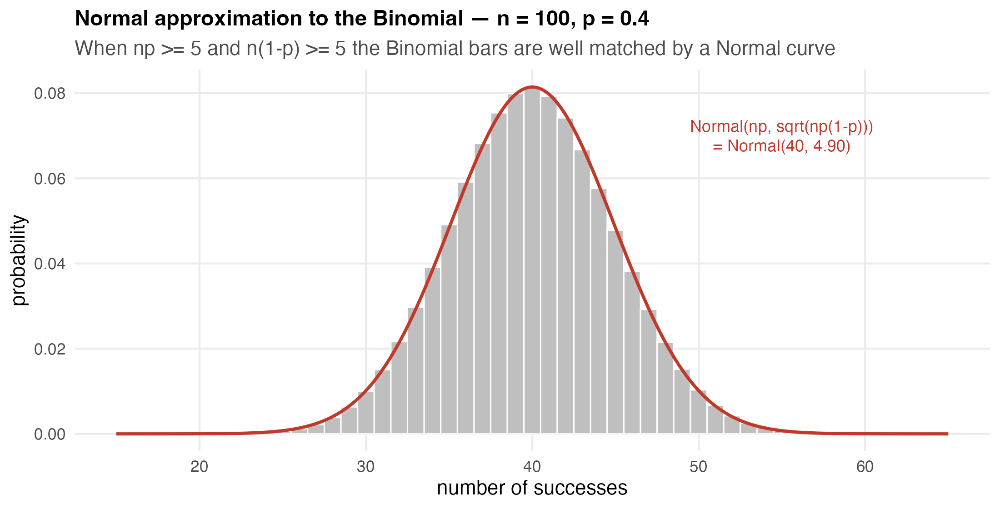
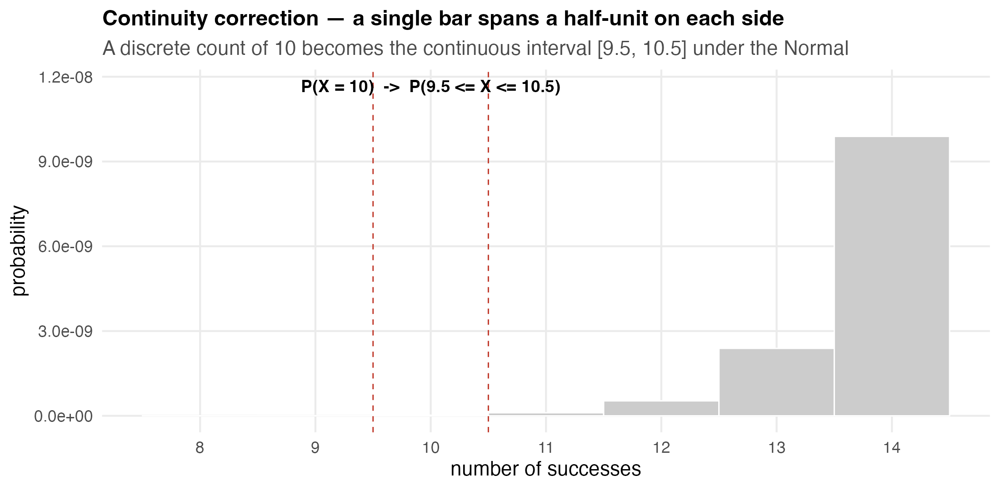
Setup. On a typical B-traffic day: \(n = 527{,}513\) impressions, install rate \(p = 0.00354\). Model daily installs \(\approx \text{Binomial}(n, p)\).
Conditions. \(np = 1{,}867 \ge 5\) and \(n(1-p) = 525{,}646 \ge 5\) → Normal approximation is safe.
\[ \mu = np = 1{,}867 \text{ installs} \qquad \sigma = \sqrt{np(1-p)} = 43.1 \text{ installs} \]
Planning question. What is the chance the day delivers more than 2,000 installs (e.g., a capacity / fulfillment trigger)?
\[ z = \frac{2000.5 - 1867}{43.1} = 3.10 \qquad P(\text{installs} > 2000) = \texttt{1 - NORM.DIST(2000.5, 1867, 43.1, TRUE)} = 0.0010 \]
Manager’s translation. A 2,000-install B-day is rare — about a 1-in-1,000 event under current traffic. Capacity planned to 2,000 installs is comfortable; the constraint is impressions, not the install spike.
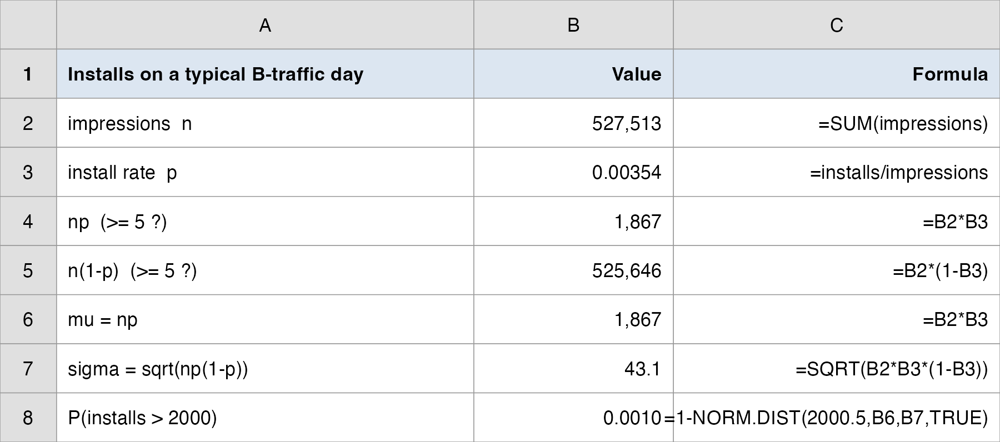
NORM.DIST.| Question | Tool | Vungle answer |
|---|---|---|
| How often does eRPM top $3.50? | \(z\) + NORM.DIST |
\(P = 0.453\) — almost a coin flip |
| What’s a top-10% day? | NORM.INV(0.90) |
$3.90 — the “great day” benchmark |
| Is the Normal model fair? | QQ plot + Shapiro | Yes — \(W = 0.96\), \(p = 0.33\) |
| Plan installs at scale | Normal approx. Binomial | \(P(>2000) = 0.001\) — rare |
One sentence: Model B’s daily eRPM as \(N(\$3.46, \$0.34)\) and the whole business vocabulary follows — “beats $3.50” happens 45% of days, a “great day” is $3.90, and a sub-$3.00 day is a 1-in-11 disappointment.
One number to remember: \(z = (x - \mu)/\sigma\) — the single move that turns any Normal question into a standard-Normal area.
One caveat: the model is only as good as its assumption. Check it (QQ plot, Shapiro) before you bet a decision on a Normal probability — and remember that at huge \(n\), even the Binomial becomes Normal.
Practice with the real data:
data/vungle_daily.csv (filter B) + NORM.DIST / NORM.INV → reproduce \(P(>3.50) = 0.453\) and the $3.90 percentile.data/vungle_normal_analysis.xlsx.Some key takeaways from this session:
NORM.DIST for probabilities (tail areas), NORM.INV for percentiles — they are inverses.Homework (individual): today’s tools (the Normal model, z-scores, and percentiles) are drilled on HW2 — individual problem sets in the previous-edition format, posted on Brightspace. Run them yourself so you can check an analyst who uses them.
Next time: we stop treating these 30 days as the whole story and recognize them as a sample — Sampling & Estimation: how to estimate the true eRPM, with a margin of error.
Business Analytics